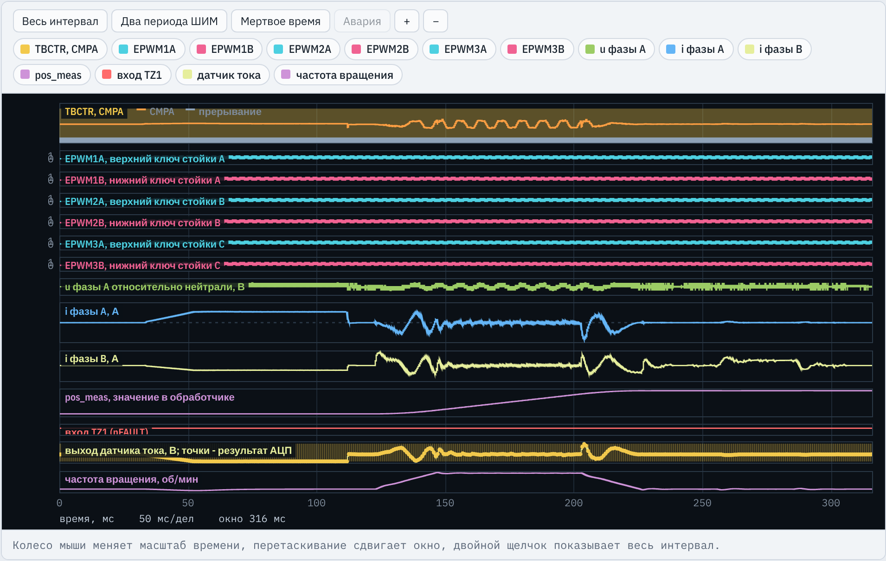
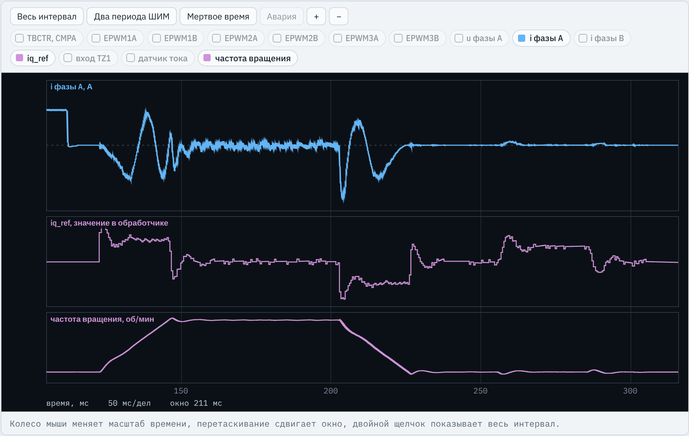
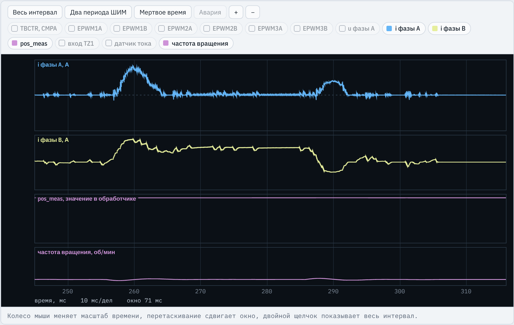
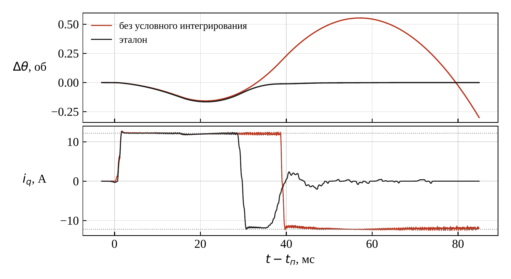
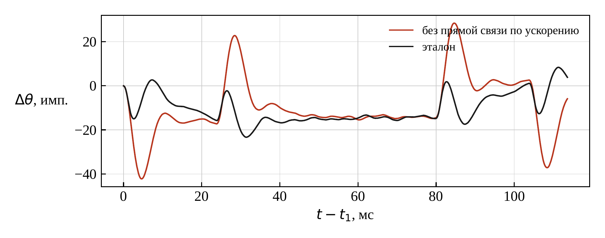

Сервопривод с синхронным двигателем с постоянными магнитами
Контуры положения и скорости, задатчик перемещения и прямые связи поверх векторного управления из ЛР6
Место в курсе
Что уже есть и что добавляется
ЛР1–ЛР2: ШИМ стойки, измерение тока АЦП по событию ePWM
ЛР3–ЛР4: контуры тока и скорости ДПТ; ПИ-регулятор скорости на симметричный оптимум, М-метод измерения скорости
ЛР5: частотное управление асинхронным двигателем
ЛР6: векторное управление СДПМ: eQEP1, начальная ориентация, контуры id, iq. Переносится без изменений
ЛР7: внешние контуры скорости и положения, задатчик перемещения
Добавляется в ЛР7
Многооборотный счет положения pos_cnt, измерение скорости, ПИ-регулятор скорости, П-регулятор положения с прямыми связями по скорости и ускорению, задатчик перемещения.
Далее, в ЛР8, параметры двигателя и коэффициенты этих регуляторов определяются автоматически.
Стенд C2000 · ЛР7. Сервопривод с СДПМ
2 / 24
Инженерная задача
Что должен делать сервопривод
Сервопривод станка или робота перемещает рабочий орган на заданный угол по графику с ограниченными скоростью и ускорением и удерживает положение под нагрузкой.
Позиционирование
Вал приходит в заданное положение без заметного перерегулирования; в покое ошибка не более 3 импульсов энкодера из 10 000 на оборот
Слежение
Во время движения вал идет за расчетным графиком. Без прямых связей отставание составило бы 1500 импульсов, с ними — десятки
Жесткость
При набросе момента 0,5 Mном в покое вал отклоняется на десятки импульсов и возвращается за 25 мс
Перегрузка
Момент 2 Mном больше наибольшего момента двигателя 1,5 Mном: ток ограничен, после снятия перегрузки вал возвращается в заданное положение
Испытания (вариант 1): режим A — перемещение на 2 оборота и наброс 0,5 Mном; режим B — перемещение на −0,5 оборота и перегрузка 2 Mном в течение 15 мс.
Стенд C2000 · ЛР7. Сервопривод с СДПМ
3 / 24
Структура
Подчиненное регулирование: положение, скорость, ток
Синие блоки пишет студент: Trajectory() — задатчик, PosSpeedCtrl() — от сравнения положений до ограничения тока. Серый блок — программа ЛР6, выполняется в каждом прерывании (125 мкс).
Стенд C2000 · ЛР7. Сервопривод с СДПМ
4 / 24
Задание студенту
Что пишет студент
Задание 1. Рассчитать kM, Tω, Δnкв, Tμω, Kpω, Kiω, Kθ, Kε, время перемещения, ошибку слежения без прямых связей, отклонение при набросе; вписать в #define
Задание 2. В adca1_isr(): многооборотное положение pos_cnt, обнуление переменных контуров в конце ориентации, вызов PosSpeedCtrl() раз в Nω периодов
Задания 3 и 4.PosSpeedCtrl(): измерение скорости и положения, П-регулятор положения и ПИ-регулятор скорости с прямыми связями
Задание 5.Trajectory(): задатчик перемещения
Приемочные испытания И1–И10, исследование прямых связей, условного интегрирования и Kθ
Дано в заготовке
main(), InitFaultInput(), все переменные, формулы K_M, T_W, W_LIM, K_CNT.
Переносится из своей ЛР6: инициализация ePWM, АЦП, eQEP1, PwmTrip(), PwmEnable(), обработчик прерывания с контурами токов.
Результат: программа проходит 10 из 10 проверок; протокол и отчет с расчетом и результатами исследования.
Из ЛР6. Счетчик QPOSCNT идет от 0 до QPOSMAX = Z − 1 = 9999 и сбрасывается каждый оборот. При переходе через ноль разность равна ±9999 — ее приводят к диапазону ±Z/2
pos_cnt += dp;
Новая строка. 32-разрядный счет: ±231 импульсов, более 200 000 оборотов. За 125 мкс при 1500 об/мин приращение около 31 импульса, что много меньше Z/2
theta_e = (float)((pos * POLE_P) % ENC_Z) * K_TH;
Из ЛР6: электрический угол по однооборотному счетчику, для преобразования Парка
Без приведения к ±Z/2 положение скачком меняется на 10 000 импульсов при каждом переходе счетчика: проходят только 2 проверки из 10, срабатывает защита.
Ориентация окончена: ось d совпадает с осью фазы A. Положение отсчитывается отсюда (так же его считают испытания). Задатчик и интеграл регулятора скорости обнуляются, чтобы в ST_RUN не было скачка задания
Не более Vmax и не более скорости, при которой цель достигается за один период; знак — по направлению
dw = fminf(fmaxf(w_cmd - w_tr, -aT), aT);
Ограничение ускорения: скорость меняется не более чем на εmaxTω за период
a_tr = dw / T_W;
w_tr += dw;
th_tr += w_tr * T_W;
Ускорение для прямой связи, скорость и положение задатчика на следующий период
При торможении шагами εmaxTω путь до остановки равен ω²/(2εmax) + ωTω/2, поэтому кривая торможения отличается от √(2εmaxs): иначе задатчик проскакивает цель.
Стенд C2000 · ЛР7. Сервопривод с СДПМ
13 / 24
Осциллограф
Общий вид: калибровка, ориентация, движение, нагрузка

TBCTR, CMPA — счетчик ePWM1 и уставка фазы A; при движении уставка меняется с частотой тока
EPWM1A … EPWM3B — ключи трех стоек; включены после калибровки
u фазы A — напряжение фазы относительно нейтрали, В
i фазы A, i фазы B — фазные токи, А
pos_meas — измеренное положение, обороты: 0 → 2
вход TZ1 — nFAULT; аварии нет
датчик тока — выход датчика фазы B, точки — результаты АЦП
Разгон и торможение примерно по 24 мс, движение с постоянной скоростью — около 56 мс. Ток велик только при разгоне и торможении, при постоянной скорости — только на трение. Положение подходит к 2 оборотам без перерегулирования.
Стенд C2000 · ЛР7. Сервопривод с СДПМ
15 / 24
Осциллограф
Задание тока iq_ref за весь процесс

i фазы A — ток фазы A, А
iq_ref — выход регулятора скорости, А
частота вращения — об/мин
При разгоне iq_ref положителен, при торможении отрицателен — это прямая связь по ускорению Kεεтр = ±5,75 А с добавкой регулятора. С 256 мс задание компенсирует момент нагрузки: около 4,1 А.
Окно 122–128 мс. Прерывание приходит в каждом периоде ШИМ, а iq_ref меняется ступенями через 4 периода (0,5 мс). Это и проверяет И2.
Стенд C2000 · ЛР7. Сервопривод с СДПМ
17 / 24
Осциллограф
Наброс момента нагрузки в покое

i фазы A — ток фазы A, А
i фазы B — ток фазы B, А
pos_meas — положение, обороты
частота вращения — об/мин
255,8 мс: момент 0,5 Mном; фазные токи постоянны, так как вал стоит. После выброса ток устанавливается за несколько миллисекунд. Отклонение 26 импульсов (0,0026 оборота) в этом масштабе на pos_meas не видно — его оценивает И7.
Стенд C2000 · ЛР7. Сервопривод с СДПМ
18 / 24
Режим B
Перегрузка 2 Mном и условное интегрирование

эталон — с условным интегрированием
без условного интегрирования — интеграл растет все время ограничения
Во время перегрузки ток на ограничении 12,2 А, вал уходит из заданного положения до 0,16 оборота. Эталон возвращается без перерегулирования. Без условного интегрирования вал проходит цель на 0,55 оборота (5540 импульсов) и не успокаивается за 70 мс.
Стенд C2000 · ЛР7. Сервопривод с СДПМ
19 / 24
Исследование
Ошибка слежения и прямые связи

эталон — обе прямые связи
без связи по ускорению — выбросы при разгоне и торможении
С обеими связями ошибка до 23 импульсов (допуск И6 — 65). Без связи по ускорению — до 42. Без связи по скорости — около 1500 импульсов, как дает оценка Vmax/Kθ.
Исследование: убрать связь по скорости, затем по ускорению; провести испытания; Kθ увеличить в 2 и 8 раз и сравнить перерегулирование (И5) и отклонение при набросе (И7).
Стенд C2000 · ЛР7. Сервопривод с СДПМ
20 / 24
Приемка
Приемочные испытания: И1–И5
№
Что проверяется
Требование (вариант 1)
Зачем
И1
Силовая часть, ориентация, контур тока
8 кГц ± 0,1 %, мертвое время 1,1…1,3 мкс, нет сквозного тока; ошибка угла theta_e в среднем не более 1,5°, наибольшая не более 4°
Программа ЛР6 перенесена без ошибок
И2
Период контура скорости
iq_ref обновляется раз в 4 периода ШИМ
На этот период рассчитаны коэффициенты
И3
Измерение положения и скорости
pos_meas — не более 2 импульсов, n_meas — не более 18 об/мин
Регулятор не лучше своего датчика
И4
Задатчик перемещения
частота не более 1622 об/мин; вход в зону ±10 импульсов не позднее 119 мс после команды
График соблюдает Vmax и εmax
И5
Точность позиционирования
перерегулирование не более 20 импульсов, ошибка не более 3 импульсов (режимы A и B)
Конечная цель сервопривода
Стенд C2000 · ЛР7. Сервопривод с СДПМ
21 / 24
Приемка
Приемочные испытания: И6–И10
№
Что проверяется
Требование (вариант 1)
Зачем
И6
Ошибка слежения
отклонение от трапецеидального графика при движении не более 65 импульсов
Работают прямые связи
И7
Наброс момента 0,5 Mном
отклонение не более 41 импульса, через 25 мс не более 3 импульсов
Жесткость и астатизм по нагрузке
И8
Перегрузка 2 Mном
iq не более 1,05 Iогр, без отключения; перерегулирование при возврате не более 100 импульсов, в конце не более 3
Ограничение тока и условное интегрирование
И9
Включение выходов
отключены при калибровке, включены не позднее 1 мс после нее, ложных отключений нет